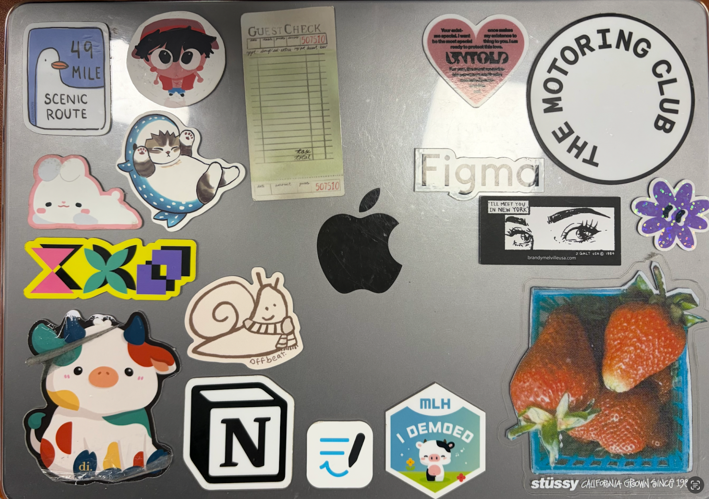

The image features a carefully posed action figure set against a custom background. What initially caught my attention was the deliberate staging; it moves beyond a simple "snapshot" of a figure and seems to be posed in a particular and specific way. The most obvious aspect is the figure itself, but the mysterious element lies in the relationship between the subject and the environment/background. It makes me wonder if this is a static tribute or a growing collection of figures. To go even further with the posing, I’d suggest experimenting with more extreme perspectives when taking pictures of the figure, such as a low-angle or using a fisheye lens to make the figure feel heroic and towering. Overall, my first impression of the image was that it is demonstrating one of many in a specific collection of objects or an interest in collecting and posing.
 Jordan Crooks, 2026
Jordan Crooks, 2026
As of now, I’m most excited about the photo of my laptop stickers because it’s essentially a living visual of parts that make up my identity. While it looks like a collage of brands and art, every sticker has a specific backstory, from a design-a-thon to a sticker that represents my hometown in a subtle way. This image anchors my collection because it represents how I aim to curate my life in a portable way. I like to think of my laptop almost as my personal portable fridge; just as people use magnets to track their childhood, I use these stickers to mark where I’ve been and what shapes who I am. You can also see the passage of time in the physical condition of the stickers, such as the frayed edges of the older ones versus the shininess of the newer ones. To make this even more compelling, I want to play with Photoshop to create "focal points" by adding outlines or selective saturation to the stickers that represent my core identity. This would help the viewer navigate the visual noise and see the specific stories I’m aiming to tell.

Elly Touami, 2026